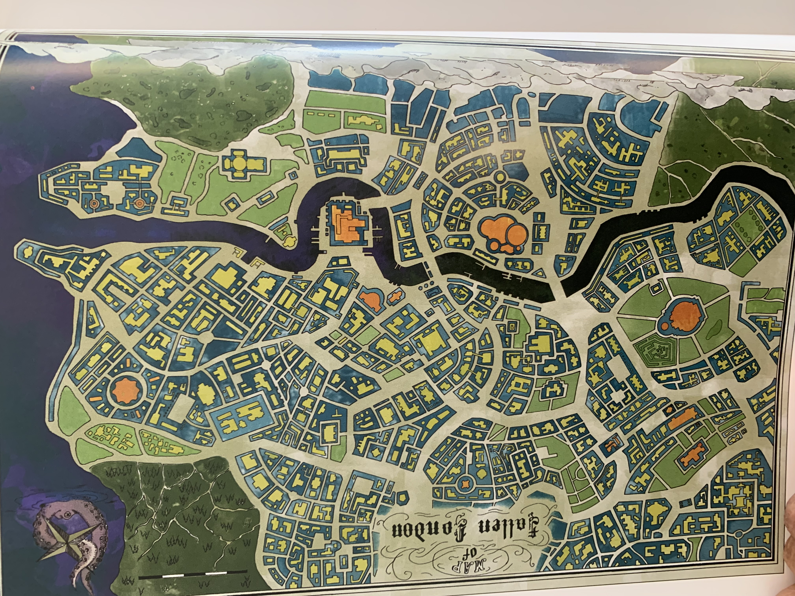
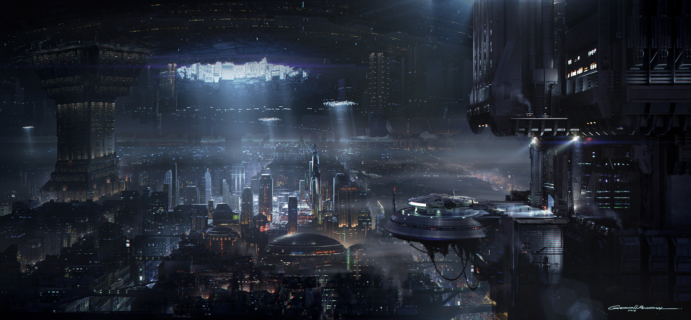
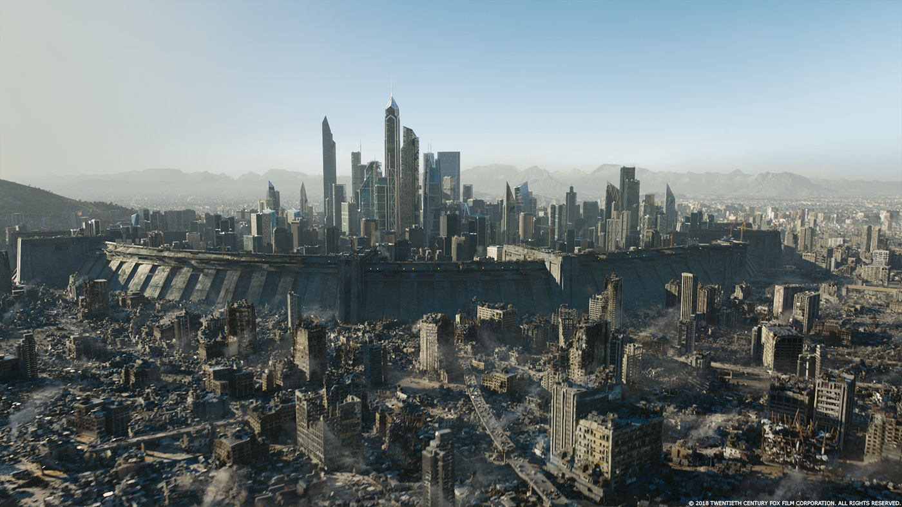

Loremvia
During my Junior we had a project in which we had to 3D model a city before importing it to unity and programming a VR rig to allow us to walk around the city.It was 2 man project consisiting of me and my friend. I worked on the creating the lower class part of the city and programming the vr rig to allow us to walk around

Firstly we started to look for sources of inspiration for our city. Looking at literature, movies, games etc. On the right is a map of the city of London from the game "Fallen London", it was one of our main sources of inspiration along with the "Last City" from the "Maze Runner" series and various different cities from the "Star Wars" universe

